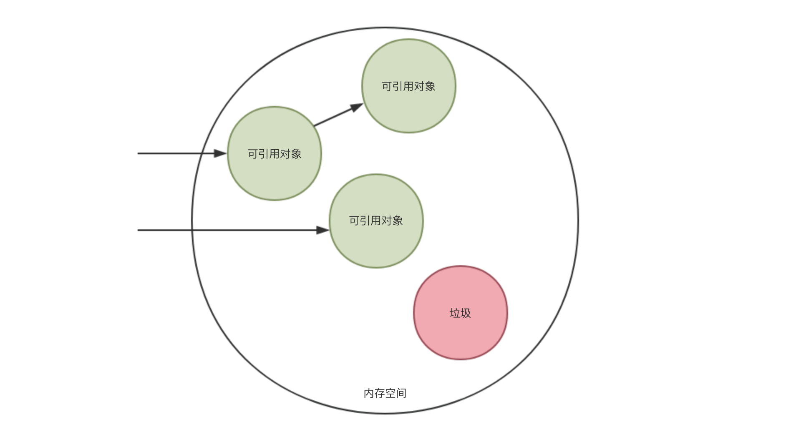
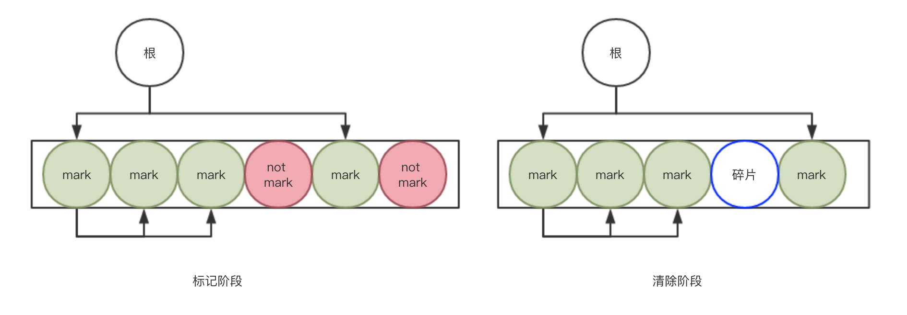
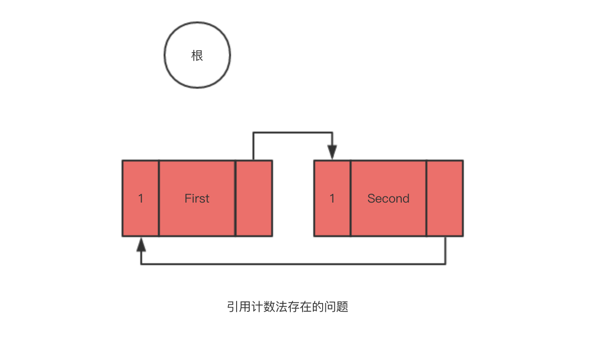

简述垃圾回收(GC)算法及其在 GoLang 和 V8 中的实现
Mar 8, 2018 22:40 · 2138 words · 5 minute read
Garbage Collection 是在内存中回收垃圾的过程，所谓的垃圾，就是内存中不会再被使用的部分。
一、什么是垃圾回收 (GC)
Garbage Collection 是在内存中回收垃圾的过程，所谓的垃圾，就是内存中不会再被使用的部分。在 C/C++ 等语言里，我们需要手动分配（malloc/new）和释放（free/delete）内存，虽然人工调优的代码能够实现细粒度的控制，充分榨干资源，但是人工的操作就意味着更高的失误率，如果出现了内存操作不当，便会发生引用错误（比如提前释放）和内存泄漏（比如忘记或太晚释放）等各种问题。
判断何时应该释放内存需要全局的把控，而释放的决定却需要在局部作出，这其实已经是一个比较难的问题。同时，手工管理内存通常免不了引发安全风险（比如误操作了其他内存空间）。这些问题可以被统称为内存安全问题, 可以想象, 如果没有 GC, 内存管理肯定是一件让人难受的事。
同时也要解释下什么是 “垃圾”, 一般情况下是把分配到内存空间中那些能被 “正常引用” 的对象称为 “活动对象”；分配到堆中那些不能通过程序引用的对象称为 “非活动对象”。”垃圾” 也就是指这些引用不到的 “非活动对象”，并且它们也不能被重新引用，所以 GC 需要回收这些 “垃圾”，释放内存空间。

总结一下：
GC 要做的有两件事, 满足这两项功能的程序就是 GC。
- 找到内存空间里的垃圾
- 回收垃圾，让程序员能再次利用这部分空间
二、GC 的常见算法
- 结束时一次回收（No GC）
在任务处理结束时一次性清理所有的资源，这是最简单的垃圾清理方式。如果程序员可以将任务拆分成许多小块，说不定这个方式也挺有效的，但事实上这么做的并不多（或许有一天内存大小接近正无穷 2333）。
- 标记-清除算法（Mark - Sweep）
GC 标记 - 清除算法由 “标记阶段” 和 “清除阶段” 构成。标记阶段是把所有 “活动对象” 都做上标记的阶段，清除阶段是把那些没有标记的对象，也就是 “垃圾” 回收的阶段。
标记阶段，collector从根对象开始进行遍历，把所有可达对象都做上标记，比较重要的一个点是递归遍历，如果忽略对象之间的循环引用，可以看做是一棵以 $root 为根的树，那么树的递归遍历我们可以选择深度优先和广度优先，不管用哪种方式，步骤数不会有明显差别，但深度优先搜索比广度优先搜索更能压低内存使用量，因此在标记阶段经常用到深度优先搜索，用伪代码形容如下：
func Mark_Phase ()
for(r : $roots) mark(*r)
func mark (obj)
if(obj.mark == FALSE) obj.mark = TRUE
for(child : children(obj))
mark(*child)
清除阶段中，collector 会遍历整个堆，所有没有 “标记” 的对象都会被释放掉，单次清除花费的时间与堆的大小成正比，伪代码描述如下：
func Sweep_Phase ()
sweeping = $heap_start
while(sweeping < $heap_end)
if(sweeping.mark == TRUE)
sweeping.mark = FALSE
else
sweeping.next = $free_list
$free_list = sweeping
sweeping += sweeping.size

如上图所示，标记-清除算法的比较大的缺点就是 GC 后有可能会造成大量的内存碎片，碎片过多时，或许在给大对象分配空间时出现问题（有足够的剩余内存空间，却不连续），这时可能会不得不提前触发一次 Full GC，而 Full GC 会导致较长时间的暂停(STW, stop-the-world^1^)，我们并不希望这样。
- 引用计数法( Reference Counting )
引用计数法是 GC 算法中比较简单也比较容易实现的一种，跟上面的 “标记-清除算法” 非常像，它在每个对象中维护一个该对象的引用计数，一般在对象被赋值、对象内容更新、函数结束（局部变量不再被引用）等时间点会触发计数的增减，如果减为 0，则意味着这个对象不会再被引用到，可以被回收释放。
实现算法真的非常简单，它的一个优点也比较明显，那就是每个对象始终都知道自己的计数值，这代表了它可以随时把垃圾回收掉（其他算法都是在执行 GC 的时候才能区分垃圾），这会缩短暂停时间。
当然它的缺点也十分明显，第一个，所有对象必须维护一个 “位数足够” 的空间作为计数使用，不仅不好把握，而且对所有对象也是一个消耗或者累赘；其次是遇到频繁变动的对象会导致计数器增减处理繁重，也需要 GC 的实现者非常细心才行， 必须在 “所有” “合适” 的时间点增减计数器才行；最重要的，循环引用会导致无法回收，见下面的伪代码：
class Node {
string id
Node nextNode
}
firstNode = new Node("First")
secondNode = new Node("Second")
firstNode.nextNode = secondNode
secondNode.nextNode = firstNode
firstNode = NULL
secondNode = NULL

可以看到，红色对象本可以被当做垃圾回收掉，由于其循环引用的缘故，计数器不为 0 也就不会被释放，所以引用计数法必须配合其他 GC 算法使用（比如 Perl 和 Python）。
JavaScript 的标准 ECMAScript 里没有对GC做相关的要求，因此 JavaScript 的 GC 机制完全由引擎决定。
V8 采用深度优先来执行标记操作。也就是说，在标记对象时，首先标记这个对象，然后标记它的第一个子对象，再标记它的第一个孙对象。在实现深度优先的标记操作时，递归调用函数是很正常的。然而，在递归执行标记操作时有一个问题，就是“调用函数的额外负担”。当所标记的对象的层次太深时，有时会调用出数量惊人的函数。因此，V8 中会自行生成用于标记的栈(标记栈)，利用这个栈反复执行标记操作。
V8 中的根:
- JavaScript中的内置类(Map)、函数、符号
- HandleScope
- V8中的全局变量
说明：
^1^ STW, stop-the-world